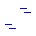
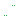
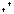
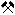

Areas
- Deciduous forest
- Coniferous forest
- Mixed forest
- Swamp

Bog, Moor- Reed bed
- Tidal flats
- Beach, Sand
- Scree
- Woodland

Meadow- Vineyard

Cemetery- Allotment gardens
- Restricted area
- Mining, Quarry
Lines
- Power line
- Cable car
- Embankment
- Dyke
- Fence
- Hedge
Roads and Paths
- Motorway, Federal road
- Rural road
- District road, Local street
- Road under construction
- Service road
- Asphalted, paved track
- Gravel track, Farm track, Cycle path
- Farm track, partly soft surface
- Unpaved farm track
- Bobsleigh run
- Summer toboggan run
- Footpath
- Difficult path (SAC scale T3 T4)
- Very difficult path (SAC scale T5 T6), Via ferrata
Symbols
- Church
- Chapel
- Castle, Fortress
- Castle ruin, Ruin
- Palace, Manor
- Palace ruin
- Sports ground
- Stadium
- Tower
- Observation tower
- Water tower
- Telecommunication tower, Transmission tower
- Mobile phone mast
- Lighthouse
- Viewpoint
- Swimming pool, Bathing area
- Campsite

Mine- Mine (disused)
- Mill
- Shelter
- Hut
- Hut (managed/serviced)
- Monument, Memorial
- Wayside cross
- Tumulus
- Summit
- Summit cross
- Spring
- Cave entrance
- Cross
- Saddle
- Prominent tree
- Sinkhole
- Power plant
- Photovoltaic system
- Wind turbine
- Chimney